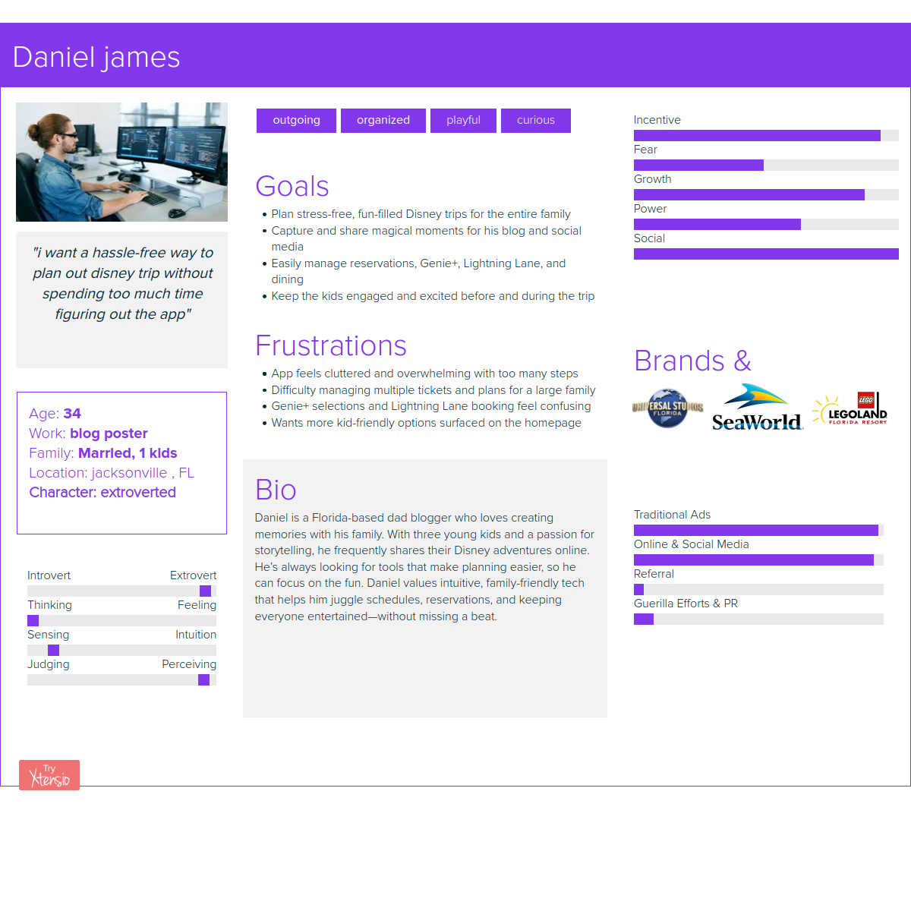
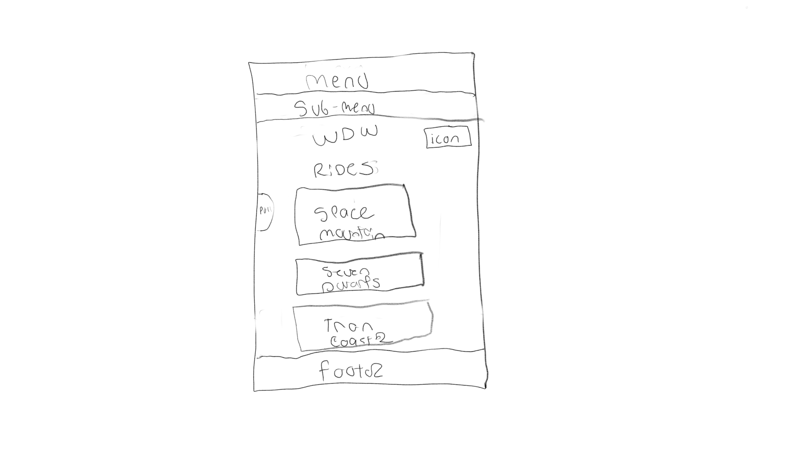

.png)

- Project Name: My disney experience app Redesign
- Role: UX/UI Designer (Solo Designer)
- Tools Used: Figma, Figjam, Photoshop, Illustrator, Google Drive/Docs, Coolors
- Timeline: 2 Weeks
- Objective: Redesign the My Disney Experience app to enhance UX with improved navigation, accessibility, and a modernized UI while optimizing performance for faster access to key features.
The redesigned My Disney Experience app provides users with a more intuitive interface, faster navigation, and improved accessibility.
The existing Universal Studios app presented multiple usability challenges that hindered the guest experience. It lacked intuitive navigation, modern visual design, and seamless mobile optimization, causing users to struggle with basic actions like booking tickets and accessing park information — leading to frustration and app abandonment during critical trip-planning moments.
Challenges with the Existing APP:
- Confusing Booking Process: Users struggled to easily locate ticket options, pricing details, and complete purchases, resulting in high cart abandonment.
- Overwhelming Navigation: An excessive number of menu items with inconsistent labels frustrated guests trying to quickly find key features like maps or dining options.
- Outdated Visual Design: The app lacked a cohesive design system, resulting in poor UI hierarchy, inconsistent branding, and low user trust in the digital experience.
- Lack of Mobile Optimization: The mobile experience was clunky, with misaligned layouts, small touch targets, and no mobile-first consideration — causing delays and guest complaints.
Why a Redesign?
- To provide a modern, streamlined digital experience optimized for on-the-go theme park guests, increasing usability and conversion rates for ticket bookings and reservations.
- To improve user satisfaction by offering an intuitive, visually engaging, and brand-aligned app that reduces friction in the planning process.
- To create a seamless, immersive experience that captures the fun, cinematic identity of Universal Studios while improving accessibility and mobile responsiveness.
Research Snapshot
Primary User
Daniel, a family-focused blogger and father of three, needs trip-planning actions to be fast, obvious, and reliable while moving through the park.
Core Problem
Key tasks are buried behind deep menus and dense screens, increasing tap count and decision fatigue during high-stress moments.
Design Goal
Surface top actions in 2 taps or less, clarify booking feedback, and modernize hierarchy so guests can plan fast and stay in the “magic.”
Impact (What This Redesign Improves)
Lower Tap Count
Prioritizes reserve ride, wait times, dining, and map access up front to reduce hunting through menus.
Less Decision Fatigue
Cleaner hierarchy and simpler navigation reduce “where do I go?” moments while guests are in motion.
Clearer Booking Confidence
Stronger confirmation cues and feedback patterns help guests trust edits, bookings, and changes in real time.
Persona

Key Insights
- Features weren’t the issue: the issue is discoverability and menu depth.
- Top actions must be immediate: ride reservations, wait times, dining, and map should be reachable within 2 taps.
- Feedback drives trust: unclear confirmations during bookings and edits increase stress.
- In-park context matters: guests need quick scanning, large touch targets, and minimal clutter.
How Might We
- Simplify trip planning by reducing menu depth and friction during peak park hours.
- Make reservations easier to edit with clear states, confirmations, and error prevention.
- Surface real-time updates (waits, dining, shows) with unobtrusive, actionable notifications.
- Personalize intelligently using guest preferences and real-time park context.
- Keep it magical + functional by balancing brand energy with clarity and usability.
POV Statement
Daniel needs a simple, reliable trip-planning experience because he wants to spend less time fighting an app and more time creating memories with his family. This redesign focuses on faster access to key actions, clearer booking feedback, and a cleaner UI built for real in-park use.
SWOT Snapshot
Strengths
- Strong Disney brand equity and large install base.
- Real-time park data enables dynamic planning.
- Loyal audience of frequent guests and passholders.
Weaknesses
- Overloaded feature set and deep menus overwhelm users.
- Inconsistent hierarchy creates decision fatigue.
- Reliability/performance issues reduce trust.
Opportunities
- Personalized recommendations and itinerary support.
- Clearer real-time notifications to reduce stress.
- Smarter navigation based on guest intent.
Threats
- Third-party planning tools and crowd apps compete.
- Policy/ride closures create inconsistent experiences.
- Non-tech-savvy guests may resist complex flows.
Affinity Diagram
Highlights showed navigation simplicity and real-time info as the biggest levers for improving guest success.

Empathy Map
Biggest frustrations weren’t load times, they were unclear instructions and weak confirmation feedback during bookings and changes.

Value Proposition Canvas
Reinforced the pillars: seamless booking, accurate real-time updates, and recommendations that feel relevant in the moment.

Card Sorting
Menu depth was a major blocker, so I simplified navigation into fewer, clearer categories aligned to how guests plan in parks.
.png)
Competitive Takeaways
- Universal: branded, but key features can still get buried in deep layers.
- Six Flags: promos and upsells clutter core planning tasks.
- SeaWorld: functional, but lacks strong brand cohesion.
- LEGOLAND: playful, but too many categories slows discovery.
Biggest Challenge
- Reduce overload without removing what guests depend on.
- Surface critical actions (waits, reservations, dining, map) so they’re instantly visible.
- Modernize hierarchy with clear CTAs, better spacing, and reliable feedback states.
Guest Feedback Highlights
- Performance pain: sluggish behavior and loading issues reduce usability in-park.
- Session/login friction: repeated logouts and verification interrupts planning.
- Reliability trust: guests hesitate when confirmations and edits don’t feel clear.
UI Style Guide
.png)
Process
- Audit + Feedback Review: identified tap-count, clarity, and reliability issues.
- Define “2 taps” goal: anchored layout decisions to speed and discoverability.
- Restructure Navigation: simplified menus and surfaced top tasks.
- High-Fidelity UI: improved hierarchy, touch targets, and confirmation feedback.
Wireframe & Design Evolution
sketchs
I began with rough hand sketches to quickly visualize potential layouts and prioritize key guest actions like ride wait times, mobile food ordering, and park maps. This low-stakes step let me experiment with ideas before jumping into wireframes.
.png)

Low Fidelity
I translated my sketches into low-fidelity wireframes to quickly map out the layout and user flows without focusing on visuals yet. My main focus here was making sure essential actions — like navigating to ride wait times or mobile ordering — were no more than two taps away at any time.


High Fidelity
Once the layout felt clean and intuitive, I moved to high-fidelity mockups. Here I incorporated Disney’s visual branding — vibrant colors, playful iconography, and clear typography — while still maintaining simplicity and clarity for easy in-park navigation under pressure.
.png)

Iteration: First Iteration vs. Final Iteration


What I Learned
- Balancing Feature Density and Simplicity: It’s critical to streamline navigation and surface the most-used actions (ride reservations, wait times, dining) without overwhelming users with deep menus and cluttered layouts.
- Self-Guided Research & User Perspective: Without direct user interviews, I relied on persona building, app store feedback, competitor analysis, and my own use of the app to uncover pain points and define priorities.
- Iterative Wireframing Improves Usability: Early sketches and low-fidelity wireframes allowed me to test multiple approaches for organizing complex features before committing to visual design.
- Consistency Builds Trust: Aligning iconography, typography, and color schemes with Disney’s brand guidelines reinforced user trust and created a more magical, cohesive experience.
- Prioritizing Real-Time Data: Surfacing live wait times, Genie+ availability, and dining updates in prominent positions reduces guest stress and improves trip-planning efficiency.